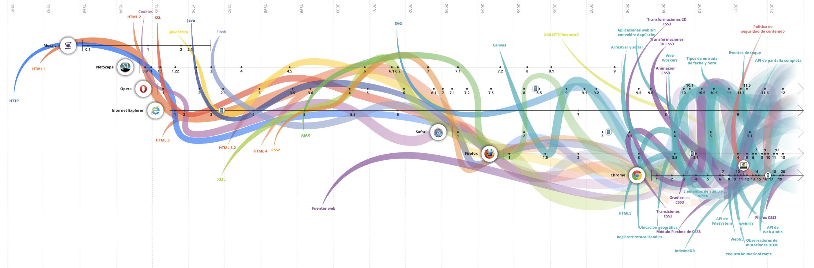

Introducción a Internet
▶️ Introducción
Internet y la World Wide Web permiten el flujo de comunicación global a un nivel que nunca antes se había visto en la historia de la humanidad. Su creación ha hecho posible que grupos de personas interactuen superando los límites geográficos que de otra forma no podrían haber superado.
La propuesta original de la Web fue redactada en la CERN (European Organization for Nuclear Research) en el año de 1989, tomando como idea precursora a un proyecto que nunca se materializó llamado Memex. Consistía en un dispositivo que almacenaría documentos de todo tipo que serían consultados y editados a través de un teclado con palancas.
Se considera Marzo de 1989 como el nacimiento de Internet. La propuesta formal de la Web fue presentada oficialmente en la CERN el 12 de Noviembre de 1990.
A finales de 1990 ya habían construido el primer servidor Web en un sistema Next, y el primer software navegador-editor de páginas.
No fue hasta abril de 1993 cuando la CERN decidió permitir el uso libre y gratuito de la Web al mundo. La aparición del primer navegador Web MOSAIC de la NCSA (National Center for Supercomputer Applications) marcó el comienzo oficial de la Web como un sistema orientado a la comunidad.
🌐 Navegadores
Los navegadores permiten explorar la WWW, se encargan de realizar peticiones, recibir contenido e interpretarlo para mostrarlo por pantalla. También permiten interactuar con el contenido mostrado. Actualmente existen varios navegadores web desarrollados por distintas organizaciones o empresas. Algunos comparten motores de renderizado. Los más usados son:
En el enlace siguiente se representan visualmente la aparición, evolución y muerte de los distintos navegadores y la incorporación de nuevas tecnologías web: Evolución de navegadores y tecnologías 
🤖 Tecnologías
Las tecnologías usadas en desarrollo web se pueden dividir generalmente en dos: las que se usan en cliente (denominadas tecnologías Front End) y las que se usan en los servidores (denominadas tecnologías Back End). En esta asignatura nos centraremos mayoritariamente en tres tecnologías que forman parte de las comúnmente denominadas Front End:
- HTML: lenguaje de marcado encargado de estructurar el contenido.
- CSS: leguaje declarativo encargado de la visualización del contenido.
- JavaSript: lenguaje para permitir la interacción.
️️️🏛️ Organizaciones
La definición y evolución de las tecnologías web dependen de varias organizaciones internacionales. La W3C formada por miembros de distintos navegadores es la encargada de definir estándares sobre Diseño Web, Arquitectura Web, Semántica Web, HTML, CSS, SVG, etc. Estos estándares luego deben o pueden ser implementados por los equipos de desarrollo de cada navegador siguiendo las indicaciones del estandar. La organización que se encarga de seguir evolucionando Javascript es TC39. TC39 es un grupo internacional de desarrolladores, academicos, implementadores, etc.